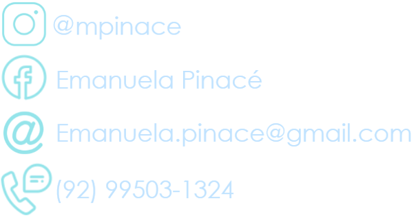
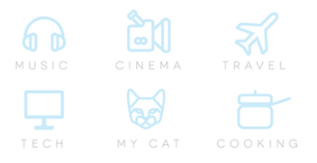

C . V .
M A N U P I N A C É
Este Curriculum Vitae pertence à Emanuela Pinacé,
aluna do Terceiro Ano de Informática B. Número 10.
Sobre Mim:
Natural de Belo Horizonte, MG.
Atualmente em Manaus, AM;
Nascida no dia 07 de janeiro de 2002;
Qualificações Acadêmicas
FMM - Fundação Matias Machline;
Manaus, AM - Brasil; 2017 - 2019
Centro Educacional Lato Sensu
Manaus, AM; 2014 - 2016
Instituição Colégio Kubitschek
Belo Horizonte, MG; 2006 - 2015
Histórico de Experiência Acadêmica
-
Membro do Time de Natação do Colégio
FMM - Fundação Matias Machline
Função: Treinar para competição
Fev/2018 - Julho/2018
-
Vice-Representante de Classe
FMM- Fundação Matias Machline
Função: Orientar e auxiliar a turma em caso de falta do representante
Período: um ano - 2018
Idiomas(spoken/written/reading)
Inglês:(Intermediário) - Instrução: Viagens;
Espanhol:(Básico) - Instrução: No colégio
Português: Nativo
Maior ato de coragem realizado em vida
Aconteceu quando eu era mais nova. Era a primeira montanha-russa que eu iria e,apesar de ter muito medo, eu consegui andar nela. A parte corajosa da história é que a montanha-russa não tinha bancos e nós tínhamos que andar nela DEITADOS.
Maior Medo em Vida
Por que tem esse medo?
Quando eu era criança fui fazer um exame de sangue e a enfermeira que realizava
o procedimento, além de errar a veia, quebrou a agulha em meu braço. Desde então tenho
pavor de realizar exames e uma grande sensibilidade nos braços.
Descreva o dia que teve mais sorte na vida
Quando eu era criança, ganhei um sorteio de padaria onde o primeiro sorteado ganhava uma bicicleta preta grande e brilhante. Porém, a mesma não tinha muita utilidade para uma criança de 5 anos como eu. No final desse dia, o menino que tinha ficado em segundo aparece lá em casa querendo trocar os prêmios, e o dele era um SuperNintendo. Foi muita sorte o garoto ter ido sugerir a troca, caso contrário eu teria ficado com uma bicicleta guardada na garagem por anos.
Gosta de animal de estimação? Descreva-os, referencie suas raças em sites da web.
Sim, mas como sou alérgica a animais com pelo, não possuo nenhum.
Qual seu time de coração? Quando começou a torcer para tal? Referencie o nome do seu time com o site oficial dele.
Meu time é o Cruzeiro Esporte Clube. Comecei a me interessar por ele quando criança porque via as lindas comemorações que faziam, as passeatas e o modo como festejavam pelo clube. Pintavam-se ruas de branco e azul e fogos de artifício tomavam conta do céu de Belo Horizonte. Eu tinha uns 5 ou 6 anos apenas, mas achava tudo isso muito bonito. Adorava ouvir as músicas que eles preparavam e ver as matérias no jornal. A Nação Azul fez parte da minha infância e eu adoro lembrar disso.
Você tem Heróis? Quem são/seriam? Por que gosta tanto dele(s)?
Não tenho, mas admiro muito a atriz Viola Davis pela sua trajetória de vida e superação. é um modelo para muitas mulheres que já passaram pelo mesmo e uma pessoa muito forte. Todas temos muito o que aprender com seus dizeres.
Você tem sonhos? Pode enumerar alguns?
- Alcançar o 'Emprego dos Sonhos' - Trabalhar como Capista de Livros;
- Completar a minha jornada de aceitação pessoal;
- Sentir-me satisfeita com minhas escolhas e suas consequências.
Em relação a FMM, por que escolheu o curso de infomática?
Escolhi Informática porque o único curso sobre qual já havia ouvido falar era este.
Interesses Pessoais:
